A Port Reis atua no ramo de fabricação de portões e serralheria desde 1999 no estado de São Paulo, com o objetivo de industrializar, com o auxílio da engenharia, produtos com alto grau de confiabilidade, elevada vida útil e fácil manuseio.
Para quem fabricamos
Dispomos de mão de obra especializada e equipamentos de última geração, direcionados para atender as solicitações nas diversas áreas:
Processos de fabricação
Abaixo seguem os processos de fabricação adotados por nossa empresa na confecção dos portões, portas, grades, clausuras e diversos.
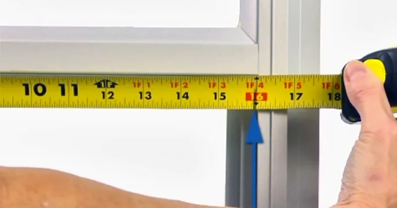
Efetuada após o fechamento do pedido, tomando como base as medidas do vão. São medidas a altura e a largura, e verificados o nível do piso, o prumo das paredes laterais e as alturas úteis para passagem de veículos.
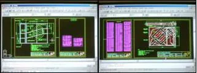
As medidas coletadas viram desenho em um programa de computação gráfica, que gera as ordens de produção, o desenho final das peças e as listagens de material com dimensionamento preciso de peso e medidas.
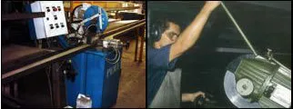
Os materiais são cortados nos tamanhos e ângulos corretos, com precisão milimétrica, em máquinas de corte refrigerado — o que elimina o problema de rebarbas no material.
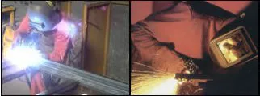
As peças são ponteadas com solda de preenchimento MIG e seguem para a área de soldagem, onde obtêm resistência e robustez com a mesma tecnologia.
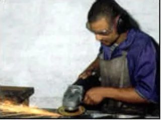
O excesso de solda é retirado e a emenda recebe acabamento, sem que haja agressão ao aço galvanizado.
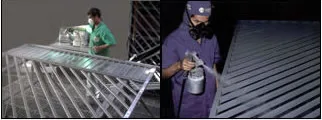
As peças são tratadas em cabines de pintura com um fundo padrão, que as deixa preparadas para receber a pintura final.
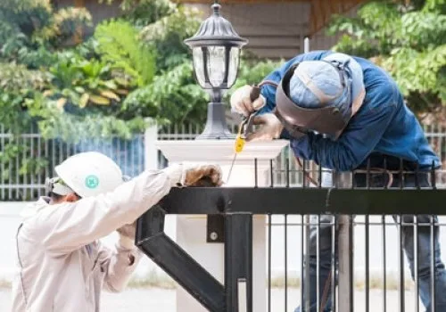
As peças acabadas são acomodadas em transportes apropriados, o que garante entrega sem avaria. Uma equipe de montadores treinados faz a instalação no vão e dá os acabamentos finais.
Todo o projeto de segurança está apoiado em três subsistemas que devem estar em constante equilíbrio sinérgico:
Produtos
Fabricante de portões, portas, grades e estruturas metálicas diversas.

Grande variedade de modelos e revestimentos, para o modelo que melhor se adequa à fachada do seu imóvel.

Resistentes e com diversas formas de funcionamento, para facilitar a logística da sua indústria, comércio ou negócio.

Alta resistência para suportar os altos fluxos de abertura e fechamento e as máquinas ultra rápidas de hoje, garantindo baixos níveis de manutenção.

Sistema de segurança de duas portas ou portões, que individualiza a entrada de pedestres ou veículos — item indispensável para a segurança de qualquer condomínio.

Grades de fechamento em vários modelos e materiais, para limitar a circulação de pessoas e preservar os diversos espaços e áreas.

Fabricadas e instaladas em janelas e áreas vulneráveis, são a primeira barreira de proteção física do seu patrimônio.

Fabricados em aço inox ou aço galvanizado, conferem segurança e modernidade ao seu projeto.

Materiais de excelente resistência física e mecânica, com instalação sob as mais rígidas normas de segurança.

Executamos qualquer projeto de cobertura, confeccionada em vidro ou policarbonato.

Geralmente utilizadas em ambientes comerciais, são uma excelente alternativa de custo-benefício.

Geralmente utilizadas em ambientes comerciais, são uma excelente alternativa de custo-benefício.

Com o crescimento contínuo do uso de bicicletas, o bicicletário é hoje preocupação de síndicos e moradores, para oferecer um espaço adequado de guarda.
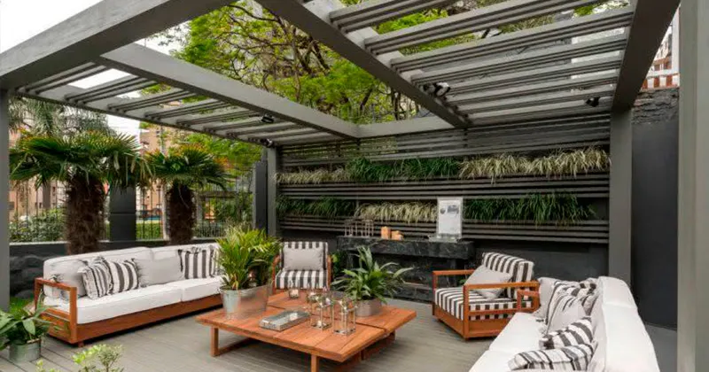
Os pergolados metálicos geram diferenciação estética e valorização arquitetônica em jardins de inverno, corredores, garagens e áreas de lazer.
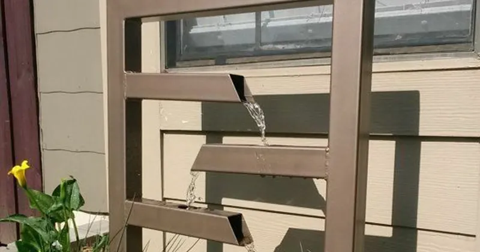
Fabricamos produtos de arquitetura e decoração em geral, desenvolvidos conforme o seu projeto.
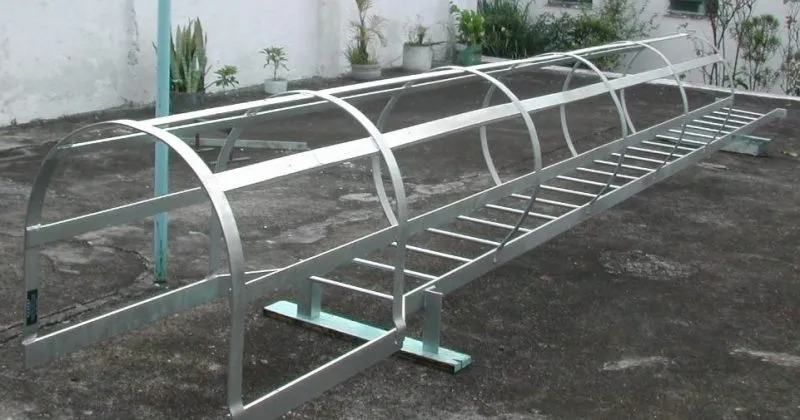
Fabricamos os mais diversos itens de serralheria, conforme a necessidade do projeto.
Serviços
Além da fabricação e instalação dos produtos fabricados pela empresa, a Port Reis executa os mais variados tipos de serviços relacionados ao nosso segmento. Dentre eles estão:
Automatização dos portões que ainda são abertos e fechados de forma manual, instalando motor de qualidade.
Manutenção corretiva e preventiva em diversos tipos de produtos instalados por nossa equipe ou por terceiros.
Além de comercializarmos somente produtos novos e fabricados para cada projeto, também efetuamos reforma de diversos produtos.
Equipe especializada em pintura e restauração, pela estética e durabilidade dos produtos comercializados.
Instalação de itens de segurança como fechaduras, travas eletromagnéticas, sensores anti-esmagamento, sistemas de intertravamento e molas aéreas.
Adequação de corrimãos de escada para condomínios, para retirada do AVCB, conforme NBR 9077.
Em campo
Fotos de serviços da Port Reis fora da fábrica.
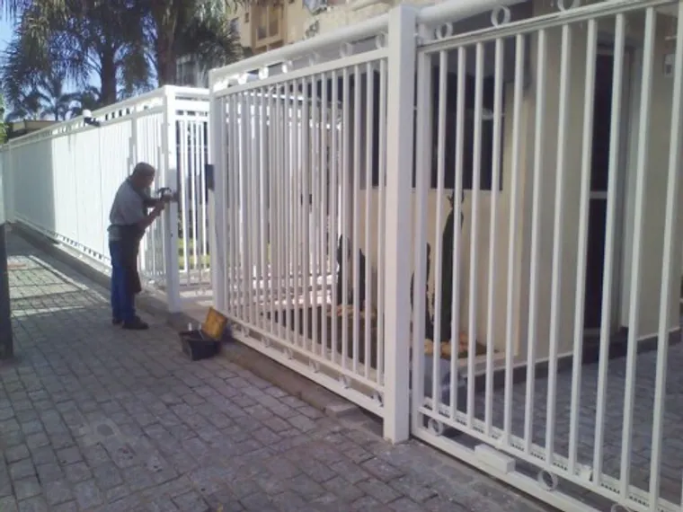
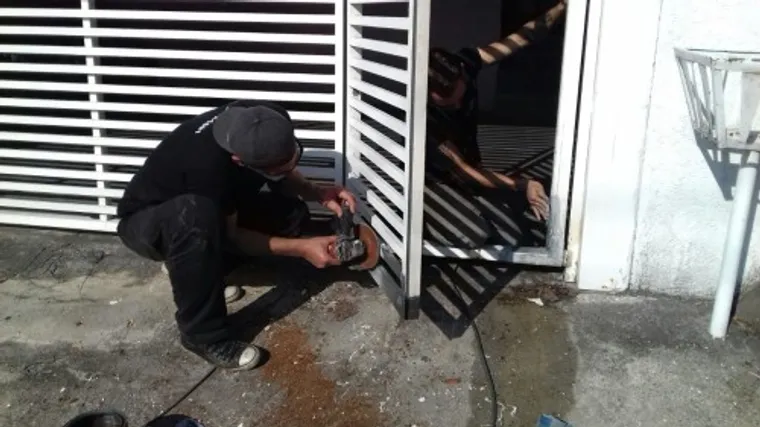
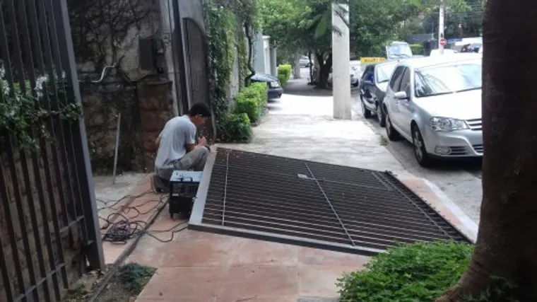
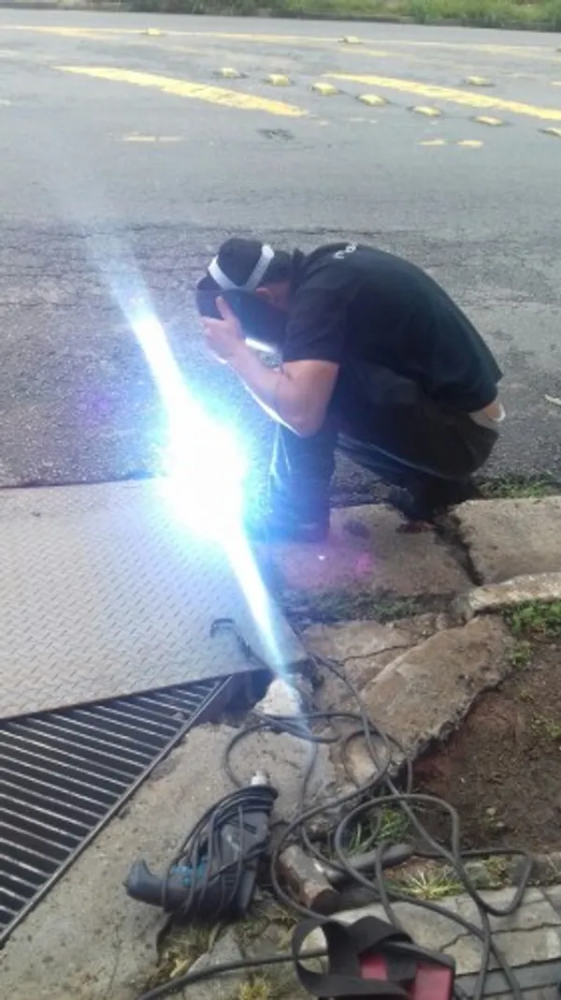
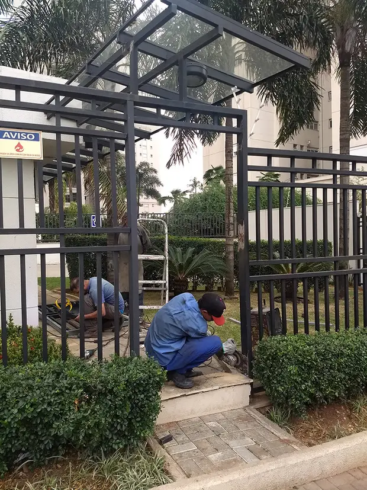
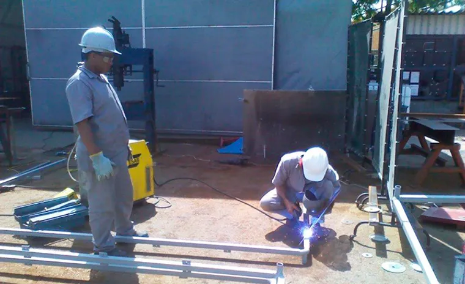
Parceiros
Unir forças em parcerias estratégicas pode e deve ajudar na conquista de um bem comum. Esse tipo de parceria visa uma troca de benefícios entre empresas e tem como objetivo a evolução destas no mercado.
A Port Reis possui hoje revendedores cadastrados, que distribuem e revendem nossos produtos. Requisitos para se tornar um revendedor:
Prezamos pela parceria com as Administradoras de Condomínio para facilitar a gestão do síndico e reduzir custos para o mesmo.
Fornecemos atendimento personalizado aos síndicos profissionais, de modo a facilitar sua gestão, prestando assessoria e buscando soluções.
Desenvolvemos projetos personalizados para seus clientes, com atendimento preferencial, benefícios exclusivos e soluções pensadas.
Portaria virtual e controle de acesso: atendimento diferenciado na execução dos projetos e nas alterações necessárias na infraestrutura dos condomínios, para viabilizar o projeto de segurança como um todo.
Buscamos parcerias com empresas de consultoria de segurança condominial, para oferecer ao condomínio a indicação de uma empresa que executará o projeto de forma plena, a um custo justo e atendendo rigorosamente os prazos de entrega.
A empresa
A Port Reis é uma empresa que atua no ramo de fabricação de portões e serralheria desde 1999 no estado de São Paulo. Fabricante de portões, portas, grades e estruturas metálicas diversas, oferece o que há de melhor e mais moderno no mercado, conquistando com isso a confiança de seus clientes pelo padrão de excelência no atendimento e na qualidade de seus trabalhos.
Empresa cadastrada junto ao CREA-SP (Conselho Regional de Engenharia e Agronomia do Estado de São Paulo).
"Port Reis demonstrou capacitação técnica e qualidade desde o estabelecimento do projeto de um conjunto de novos portões e clausura, tanto para os pedestres quanto aos automóveis, para instalação de portaria virtual. [...] Na implantação se fez no prazo estabelecido e com técnicas rígidas no assentamento, alinhado com a qualidade do trabalho de seus colaboradores."
José Renato Oliveira — Síndico, Cond. Ed. Mateus Grou
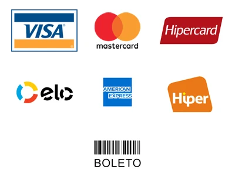
Direto da fábrica · Parcelamento em até 12 vezes · Melhores condições
Formas de pagamento aceitas pela Port Reis.
Contato
Atendimento de segunda a sexta, das 9h às 17h.